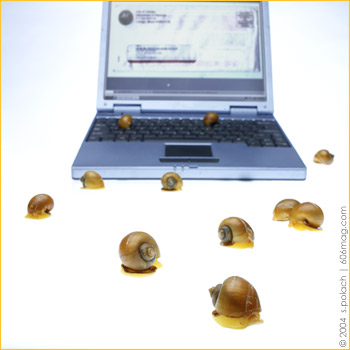

Sometimes I just can't figure it out.
All the usual questions and all the normal paths of logic lead to unsatisfactory answers. I wonder if this whole problem I have is a worry only experienced by me: Do others feel the same way? Am I the only one who can't simply appreciate the ease of communication but must deconstruct form, authenticity, aesthetics and length, asking, above all, why?
I still keep it in a box - yellow with brown trim, I think, but I can't remember - stuffed in one of my closets. Inside are items that for some reason or other I have kept because of mostly made up reasons of importance and nostalgia. There is a picture of friends from the sixth grade, a friendship bracelet no doubt given to me by a girl I had a crush on, an old silver ring that I used to love and finally the first hand-written letter I ever got in the mail. While it contains nothing I need to know in the future, I’ve kept it for all these years and have been very grateful to its sender for taking the time.
But every day now, I get more forms of communication in a much higher volume: e-mail. My, and I'm sure your, inbox is full of both important and useless missives alike. And most certainly like you, I have certain friends and acquaintances that use the computer to pontificate of a number of topics. I even have a friend who has been living overseas for almost a year now and she is kind enough to send long e-mails to her friends explaining her life and her journeys. These get shifted to the “when I have time” folder.
I do read them eventually, but I do not cherish them. The sender has generally crafted much finer sentences than in handwritten letters. They have provided information that I am very grateful to have yet I will not print this out and cherish like other communiqués I have received in the mail. Like I said, I can't figure it out. Your own “pack-ratting” of items for nostalgic or documentation purposes is your own problem. My problem is explaining how both snail mail and e-mail find their way from the sender to a receiver.
Low Tech: Snail Mail
The U.S. Postal Service, though amazing, is extremely low-tech. The system is so old-fashioned I can’t believe the mail gets delivered at all. Never before in my searches to uncover how something works have I been so impressed by the lack of anything impressive. This utter void of technology in reality explains the reasons - maybe even justifies - why countless postal employees have lost it. To you among us who have “gone postal,” I understand. This is for you.
The process starts when you place the hand-written letter in a mailbox. Your local carrier will pick up the mail and when they return from their route they will deliver their picked-up mail to their post office. Letters from all mail carriers have to be sorted and shipped to the correct mail processing center, and the only way to know which center a letter has to go to is by the ZIP code on the letter itself. Here’s where my amazement begins.
More than 80 percent of mail is sorted by hand. For those of you contemplating that last sentence, let me clarify. Eighty percent of all the mail in the United States is ZIP code-sorted by a human and not by a machine. The post office claims there are many reasons for this, but if we can send a man to the moon and invent Krispy Kreme, I have to believe there is some better way to automate.
All postcards and average-size mail is first run through a postmarking machine that prevents the stamp from being used again. All larger-size mail goes through the same process, but by hand. It is then ready to be sorted. As with the de-stamping process, all large pieces of mail are sorted by hand.
Only 20 percent of regular mail is sorted by a machine because of your silly little chicken scratch. The sorting machines use optical sensors to try and read the hand-written ZIP code on the envelope. When it does detect the right characters - or so it thinks - the machine places a barcode on the envelope representing the ZIP code in an effort to help out other mail carriers down the line. Needless to say, a machine trying to read human handwriting has a few glitches.
The sorted mail is then sent to the correct mail processing center. These centers must go through the same sorting process using the ZIP code once again. Let’s assume all goes well and your letter finds its way to the correct post office. Here is where I empathize with my postman - the local carrier must go through bins and fill their bag with the letters for each route. By hand. This must be done from at least two different bins, regular and oversized mail. Only then do they receive the bundle of letter sorted for them by the machines, which, conveniently enough, they must resort to fit in the order of their route.
For the love of God!
As we all know, carriers cover their routes on foot, by vehicle or in a combination of both. On foot, they carry a heavy load of mail in a satchel or push it in a cart. In some urban and most rural areas, they use a car or small truck. Although the Postal Service may provide vehicles to city carriers, most rural carriers use their own automobiles. Finally, the letter makes its way into a mailbox, hopefully the right one.

There are many times we should be relying on humanity to make decisions and improve our lives. I’m not asking for artificial intelligence - I saw Terminator, fuck that - but maybe the Postal Service could use a little bit more technology and a little less humanity. Then again, that’s what e-mail does.
High Tech: E-mail
My shock and amazement is not just reserved for the medieval ways of our Postal Service, because it also extends into the realm of electronic mail as well. This time, however, I’m amazed at the simplicity of the whole thing and, strangely, how human the whole transaction is.
Every day you sit down to write and receive e-mails, so the methods of writing and the programs used in the task are going to be ignored. The process works the same if you use an e-mail client like Outlook Express or a Web-based program like Hotmail or Yahoo.
You create an e-mail that has spaces for your e-mail address, the address of the recipient, subject and the body. When you have filled in all fields and click “send,” the magic happens. Before I reveal the magic, you need to know a thing or two about different servers and how they help the e-mail get to where it’s going. For our purposes, there are two types of servers: SMTP and POP. All you need to know is that SMTP servers send and receive the e-mails between each other and then communicate with POP servers who deliver the email to your Outlook or Hotmail.
The text you typed into your e-mail goes into a text file usually called “yourname.txt”. When you hit “send,” your computer sends that .txt file to your SMTP server. The .txt file has everything the server needs to know about where to send it. Now the humanity of the whole system becomes apparent. When your SMTP server is ready to contact the SMTP server of where the email is being sent, it just starts a dialog, two machines chit-chatting. Here’s an example of what it looks like. Your SMTP server is in blue and the recipient’s SMTP server is in green.

helo test
250 mx1.mindspring.com Hello abc.606mag.com
[220.57.69.37], pleased to meet you
mail from: abc@606mag.com
250 2.1.0 abc@606mag.com... Sender ok
rcpt to: jsmith@mindspring.com
250 2.1.5 jsmith... Recipient ok
data
354 Enter mail, end with "." on a line by itself
from: abc@606mag.com
to:jsmith@mindspring.com
subject: testing
John, I am testing...
.
250 2.0.0 e1NMajH24604 Message accepted
for delivery
quit
221 2.0.0 mx1.mindspring.com closing connection
Connection closed by foreign host.
The damn thing says hello! Well, kinda says it, at least. Your SMTP very concisely says, “Hey, this is who I am, is that OK? Good, I’ve got mail for this guy, is he here? Great. Here you go. Bye.” If only my life were so simple.
So now the SMTP server of the recipient has the e-mail. Remember that .txt file? Now that it has been received, it has some more information attached to it, so instead of it being “yourname.txt” it is “receivername_yourname.txt.” Here’s where the other type of server comes in.
The POP server, which stands for Post Office Protocol, looks at the .txt file and says, “Hey, that ‘receivername’ is right here.” It takes the .txt file and adds your message to the bottom of the receiver’s .txt file located on the POP server. Now when the person you where sending it to connects from his computer to his POP server he has a .txt file that has all the e-mails that have been collected from the server
This was only the basics of e-mail and the two types of servers that do the work for you. Because there are two separate servers, it might help explain why sometimes you can send but not receive e-mails, or vice versa.
What about attachments? Cryptography? That’s for another article.
Conclusion
Say you wanted a glass of water and asked for one. Your friend would get a glass out of the cupboard and then fill it with water. You - unless you’re a selfish bastard - would be thankful, because it was efficient and exactly what you asked for. That is just like an e-mail. Now imagine you asked for the same thing, but instead of grabbing a cup from the cupboard, your friend went out back and starting blowing glass. While it was cooling, he even added some nice swirls of color. With the finished glass in hand your friend melted a piece of a pure Arctic Circle ice cap into the glass for you. That’s like a letter. Inefficient, more then you needed or asked for and certainly something you’d keep longer and respect more.
| see previous tech's |